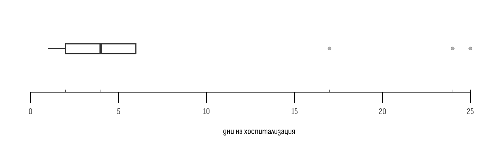

[1] 90 80 89 72 73 74 78 86 84 82Дескриптивна и инферентна статистика
Bulgarian
Medical Statistics
Medicine | 2nd year
Dental medicine | 2nd year
Материалът представя основни понятия и базови познания за описание на извадкови статистики и изграждане на интервал на доверителност
Увод
Провеждането на едно статистическо изследване е трудоемък процес, в който се изискват множество финансови, човешки и времеви ресурси. Много често не е възможно изследването на всички индивиди, които са обект на интерес. Немислимо е например да се прегледат всички пациенти със сърдечна недостатъчност, за да се установи дали ново лекарство намалява пулса им. В помощ на науката идва статистиката. Тя ни позволява изследваме малък брой единици (извадка), а резултатите от тях да обобщаваме за всички (генералната съвкупност 1). На фигура Фигура 1 са представени схематично посочените термини.
Основни понятия
Дескриптивна и инферентна статистика
Дескриптивна (описателна) статистика представлява анализ и описание на статистическите явления в извадка. Инферентна статистика е процесът на генерализация (обобщение) на получените резултати в генералната съвкупност
Статистически променливи
Статистическите данни се “вземат” чрез измерване на определена характеристика върху група от обекти. Тъй като измерванията могат да приемат различни числови или нечислови стойности, те се наричат още променливи. За една група студенти от втори курс например, може да се установи, че се различават по пол, възраст, успех, отношение към определен проблем и редица други характеристики. Следователно изброените са наблюдавани променливи. От друга страна, ако характеристиката е една и съща за всеки член на групата, тя се нарича константа.
Статистическият признак
Представлява отличителна черта, белег на една или повече единици - обекти на статистически изследвания.
Статистическите признаци се различават по вид, което налага различен подход при статистическото им изучаване. Основното им разделяне е на вариационни и категорийни. Вариационните, наричани още количествени, са тези, които се изразяват с числа. Те могат да бъдат прекъснати (дискретни) и непрекъснати (континюитетни). Прекъснатите могат да приемат отделни, изолирани една от друга числови стойности. Такива са броят на членовете на отделно домакинство, броят боледувания за една година, брой живородени деца и др. 2. Непрекъснати са признаците, които могат да получават всякакви характеристики в даден числов интервал. Такива са: теглото, температурата, кръвното налягане. Посочените характеристики могат да бъдат измервани с изключителна точност след десетичната запетая. Категорийните признаци, наричани още атрибутивни или качествени са тези, чиито характеристики нямат числов израз. За тях се използват “етикети” или описателно наименование. Такива са например пол, семейно положение, кръвна група, вид заболяване и др.
Признаците биват два основни типа: количествени и качествени.
Количествени са тези променливи, които могат да бъдат изразени числено, а качествени са тези, които нямат числено значение.
Скали за измерване
Скалата, по която се измерва една статистическа променлива, е фактор от голямо значение при определянето на подходящи методи за анализ. Разделянето на скалите за измерване се извършва в съответствие със степента на точност, която използват 3. Качествените променливи се измерват на номинална, рангова и ординална скала, а количествените - в интервална и/или пропорционална скала (скала на отношенията). Първите две скали се наричат неметрични и се определят като “слаби, неточни скали” а вторите две — метрични или “силни, точни скали”. Описание на скалите с примери от медицинската статистика са представени в Таблица 1
| Скала | Характеристика | Пример |
|---|---|---|
| Номинална | Категории, “наименования, етикети”. | Диагноза, кръвна група |
| Дихотомна | Вид номинална скала за признаци само две възможни стойности. | пол |
| Ординална | Качествени променливи, които имат логически (нарастващ или намаляващ) ред. Не е възможно изчисление на пропорция или разлика | Степен на тежест на сърдечна недостатъчност (лека, умерена, тежка), стадии на онкологично заболяване (I-ви, II-ри ..) |
| Рангова | Вид ординална скала при която единиците се записват с рангове (поредни места) от 1 до п. | Оценки “слаб 2”, “среден 3” и т.н. |
| Интервална | Количествени променливи. Стойността “0” не означава липса на признака, тя е допустима наред с други позитивни и отрицателни стойности. Не позволява отношения | Температура ( NB: Ако днес е 10 градуса по-топло от вчера, няма как да изчислим “колко процента по-топло е”) |
| Пропорционална | Количествени променливи. Стойността “0” означава липса на признака. Позволява съотношения | Тегло (можем да го измерим с голяма точност след десетичната запетая). |
Дескриптивен статистически анализ
Статистическият анализ обхваща проучване посредством подходящи методи на обобщаващи числови характеристики и смисловото им интерпретиране. Тези характеристики се разделят на два вида - описващи централната тенденция и разсейването в изследваната извадка 4. Централната тенденция при променливите, които се измерват на пропорционална или интервална се описва посредством средната аритметична и медианата. Разсейването при тези променливи се онагледява чрез стойността на стандартното отклонение или интерквартилния размах. За променливите измервани на номинална и ординална скала се използва единствено индикаторът относителен дял.
Показатели за централна тенденция
Средна аритметична
Средната аритметична се изчислява в зависимост от вида на представяне на количествените данни. Те могат да бъдат изброени негрупирани числа или таблично подредени агрегирани и групирани стойности. От своя страна групировката може да бъде извършена във вариационен или интервален ред.
Негрупирани данни
При изчисление на средната аритметична за негрупирани данни се използва формулата:
\[\bar{x} = \frac{\sum x_{}}{n}\]
Където:
- \(\bar{x}\) е символът за средна аритметична;
- \(\sum x_{}\) е сборът на числовите стойности на наблюдаваната променлива;
- \({n}\) е броят на наблюденията.
Нека онагледим това с пример. По-долу са представени стойностите на променливата “сърдечен пулс” за 10 студента от втори курс.
Графично е представено тяхното разпределение на фигура Фигура 2. В случая, средната аритметична представлява “средата” на това разпределение (най-издадената му част). За да я изчислим разделяме сбора от стойностите на пулса за всеки един от студентите върху техния брой. Така получаваме:
\[\bar{x} = \frac{90+80+89+72+73+74+78+86+84+82}{10}\] \[\bar{x} = \frac{808}{10} = 80.8\]
Групирани данни
Интервален ред
Когато разполагаме с по-голям обем данни, удобно е тяхното представяне в групирана форма. При интервалния ред тази групировка се извършва чрез “разкъсване” на стойностите на изследваната променлива в равномерни и неприпокриващи се стъпки - интервали. Всеки от тях се определя от долна и горна лимитираща стойност (граница). При формирането на интервалните групи се преброяват само участниците, чиято наблюдавана стойност е в границите на интервала. С други думи, при тази групировка “губим” статистическа точност, защото не знаем индивидуалните стойностите на участниците, а само към коя група принадлежат. Пример за интервална групировка е представен в Таблица 2 .
| пулс | брой студенти |
|---|---|
| 48 - 52 | 4 |
| 53 - 57 | 5 |
| 58 - 62 | 8 |
| 63 - 67 | 11 |
| 68 - 72 | 6 |
| 73 - 77 | 6 |
| 78 - 82 | 5 |
За да изчислим средната стойност за променливата пулс в посочения пример, използваме формулата:
\[\bar{x} = \frac{\sum x_{u}\cdot{f}}{\sum_f }\]
Където:
- \(\bar{x}\) е символът за средна аритметична;
- \(x_{u}\) e средата на всеки от интервалите. Тя се изчислява като половината на сумата между горната и долната лимитираща стойност. Например, за интервала 48 - 52, средата е 50;
- \(f\) е броят на наблюденията за всеки един интервал;
- \(x_{u}\cdot{f}\) е произведението между средата на интервала и броя на наблюденията в него;
- \(\sum{x_{u}\cdot{f}}\) е сумата от всички произведения;
- \(\sum_f\) е сумата от всички наблюдавани участници.
Нека представим нагледно примера в Таблица 2 . Първата стъпка е определянето на средата на интервалите. Това е извършено в Таблица 3 .
| пулс | среда на интервала | брой студенти |
|---|---|---|
| 48 - 52 | 50 | 4 |
| 53 - 57 | 55 | 5 |
| 58 - 62 | 60 | 8 |
| 63 - 67 | 65 | 11 |
| 68 - 72 | 70 | 6 |
| 73 - 77 | 75 | 6 |
| 78 - 82 | 80 | 5 |
След това изчисляваме произведенията между броя наблюдавани студенти и средата на интервала. Това е направено за всеки един интервал и представено в Таблица 4 .
| Пулс | Среда на интервала | Брои студенти | Произведение \({x_u}\) х \({f}\) |
|---|---|---|---|
| 48 - 52 | 50 | 4 | 200 |
| 53 - 57 | 55 | 5 | 275 |
| 58 - 62 | 60 | 8 | 480 |
| 63 - 67 | 65 | 11 | 715 |
| 68 - 72 | 70 | 6 | 420 |
| 73 - 77 | 75 | 6 | 450 |
| 78 - 82 | 80 | 5 | 400 |
Накрая сумираме всички получени произведения и ги разделяме на броя студенти
\[\bar{x} = \frac {200+275+480+715+420+450+400} {45} = \frac {2940} {45} = 65.33 \]
Степенен ред
Вторият вариант за групиране на статистически данни е степенния ред. При него записваме всяка стойност на интересуващата ни променлива, а срещу нея нанасяме броя на наблюдаваните лица, при които сме я наблюдавали. Пример за степенен ред е представен в Таблица 5 .
| Стойност на пулса | Брой студенти |
|---|---|
| 59 | 1 |
| 60 | 0 |
| 61 | 2 |
| 62 | 4 |
| 63 | 0 |
| 64 | 3 |
| 65 | 2 |
| 66 | 1 |
| 67 | 1 |
| 68 | 3 |
За изчисляването на средната аритметична, при данни в степенен ред, използваме формулата:
\[\bar{x} = \frac{\sum x_{}\cdot{f}}{\sum_f }\]
Където:
- \(\bar{x}\) е символът за средна аритметична;
- \(x_{}\) e стойността на наблюдаваната променлива;
- \(f\) е броят на наблюденията за всяка една стойност;
- \(x_{}\cdot{f}\) е произведението между всяка от стойностите на променливата и броя на наблюденията за нея;
- \(\sum{x_{}\cdot{f}}\) е сумата от всички произведения;
- \(\sum{f}\) е сумата от всички наблюдавани участници.
Нека представим нагледно примера в Таблица 5 . Първата стъпка, за изчисление на средната аритметична, е определянето на произведенията между всяка една стойност на променливата и съответния брой на наблюденията. Това е направено в Таблица 6 .
| Стойност на пулса | Брой студенти | Произведение \({x}\) х \({f}\) |
|---|---|---|
| 59 | 1 | 59 |
| 60 | 0 | 0 |
| 61 | 2 | 122 |
| 62 | 4 | 248 |
| 63 | 0 | 0 |
| 64 | 3 | 192 |
| 65 | 2 | 130 |
| 66 | 1 | 66 |
| 67 | 1 | 67 |
| 68 | 3 | 204 |
След това сумираме всички получени произведения и ги разделяме на броя студенти 5 :
\[\bar{x} = \frac {59+0+122+248+0+192+130+66+67+204} {17} = \frac {1088} {17} = 64 \]
Други показатели за централна тенденция
Освен средната аритметична съществуват и други показатели, които представят централната тенденция. Това са:
- Медианата - Медианата е тази стойност, която разделя възходящо подреден статистически ред на две равни части. С други думи 50% от наблюдаваните стойности са или по-големи или по-малки на медианата 6 7;
- Модата \({M_0}\) е най-често срещаната стойност в статистическия ред и се намира чрез броене 8.
Относителен дял
Относителният дял представлява централна тенденция за променливите измервани на ординална и номинална скала. Той се изчислява чрез формулата:
\[\hat{p}=\frac{m}{n}{100}\]
Където:
- \(\hat{p}\) е символът за относителен дял;
- \(m\) е броят на наблюденията, за които искаме да установим централната тенденция;
- \(n\) е броят на всички наблюдения в изследваната група.
Ако искаме да разберем какъв е относителния дял на 4 момичета в група от 10 студенти:
\[\hat{p}=\frac{4}{10}{100} = 40\%\]
Показатели за разсейване
Показателите за разсейване са мерки за разпръснатостта на стойностите спрямо централната тенденция. В настоящия курс ще разгледаме показателите за разсейтване само за променливи измервани на пропорционална или интервална скала.
Размах
Размахът представлява разликата между максималната и минималната стойност в един статистически ред 9. Ако използваме първия пример, за стойността на пулса при 10 студенти - 90; 80; 89; 72; 73; 74; 78; 86; 84; 82, размахът е
\[{R} = 90 - 72 = 18\]
Стандартно отклонение
Стандартно отклонение при негрупирани данни
Стандартното отклонение е показател за средното ниво на разсейване спрямо средната аритметична. Формулата за изчисление на стандартното отклонение е \[{SD} = \sqrt{\frac{\sum (x_{} - \bar{x})^{2}}{n}}\]
Където: - \({SD}\) е символът за стандартно отклонение; - \(x_{}\) е стойността на всяко едно наблюдение; - \(\bar{x}\) е средната аритметична; - \(n\) е броят на наблюденията в изследваната група; - \(x_{} - \bar{x}\) е отклонението на всяко едно наблюдение от средната аритметична; - \(\sum (x_{} - \bar{x})^{2}\) е сумата от квадратите на всички отклонения.
Нека разгледаме примера с пулса на 10-тимата студенти от втори курс. Както определихме по-рано, средната стойност на пулса за тях е 80.8. Въпреки това няма нито един студент с точно тази стойност. Всеки студент се отклонява с няколко удара под или над тази средна. Това отклонение представлява разсейването (девиацията) и е първата стъпка при изчислението на стандартното отклонение. Разликите между стойността на средната аритметична и стойността на пулса за всеки един студент са представени в таблица Таблица 7
| сърд.честота | девиация |
|---|---|
| 90 | 9.2 |
| 80 | -0.8 |
| 89 | 8.2 |
| 72 | -8.8 |
| 73 | -7.8 |
| 74 | -6.8 |
| 78 | -2.8 |
| 86 | 5.2 |
| 84 | 3.2 |
| 82 | 1.2 |
Ако съберем девиациите на всички участници, че получим “0”. Това няма да ни позволи да изчислим средното отклонение в групата – затова, във втората стъпка повдигаме всяка една от девиациите на втора степен. Изчисленията са представени в Таблица 8
| сърд.честота | девиация | девиация^2 |
|---|---|---|
| 90 | 9.2 | 84.64 |
| 80 | -0.8 | 0.64 |
| 89 | 8.2 | 67.24 |
| 72 | -8.8 | 77.44 |
| 73 | -7.8 | 60.84 |
| 74 | -6.8 | 46.24 |
| 78 | -2.8 | 7.84 |
| 86 | 5.2 | 27.04 |
| 84 | 3.2 | 10.24 |
| 82 | 1.2 | 1.44 |
В третата стъпка - събираме стойностите на всички отклонения повдигнати на квадрат. Резултатът разделяме на броя на студентите, а за да “стандартизираме” използваното в предходния етап степенуване, използваме реципрочната математическа функция – коренуване.
\[ {SD} = \sqrt{\frac{84.64 + 0.64 + 67.24 + 77.44 + 60.84 + 46.24 + 7.84 + 27.04 + 10.24 + 1.44}{10}}\] \[SD = \sqrt{\frac{383.6}{10}} = \sqrt{38.36} = 6.19 \]
След като вече разполагаме със стандартното отклонение, можем да изразим пулса на групата по този начин \({\bar{x}} = {80.8\pm 6.19}\)
Стандартно отклонение при данни групирани в интервален ред
Нека разгледаме примера с пулса на 45 студента от втори курс. Изходните стойности са представени в Таблица 2 . За да определим стандартното отклонение, трябва да приложим следната формула:
\[{SD} = \sqrt{\frac{\sum {(x_{u} - \bar{x})^{2}}\cdot{f}}{\sum_f }}\]
Където:
- \({SD}\) е символът за стандартно отклонение;
- \(x_{u}\) e средата на всеки от интервалите;
- \(\bar{x}\) е средната аритметична;
- \(f\) е броят на наблюденията за всеки един интервал;
- \(x_{u} - \bar{x}\) е отклонението на средата на интервала от средната аритметична;
- \(\sum {(x_{u} - \bar{x})^{2}}\cdot{f}\) е сумата от квадратите на всички отклонения, умножени по броя на наблюденията в интервала;
- \(\sum_f\) е сумата от всички наблюдавани участници.
Нека разгледаме последователно как се изчислява стандартното отклонение в посочения пример.
Първата стъпка е определянето на средата на интервалите - това е показано в Таблица 3 . Във втора стъпка - определяме девиацията между средата на всеки интервал и изчислената средна аритметична - 65.33. Това е представено в Таблица 9 .
| пулс | среда на интервала | Девиация \(x_{u} - \bar{x}\) | брой студенти |
|---|---|---|---|
| 48 - 52 | 50 | -15.33 | 4 |
| 53 - 57 | 55 | -10.33 | 5 |
| 58 - 62 | 60 | -5.33 | 8 |
| 63 - 67 | 65 | -0.33 | 11 |
| 68 - 72 | 70 | 4.67 | 6 |
| 73 - 77 | 75 | 9.67 | 6 |
| 78 - 82 | 80 | 14.67 | 5 |
В трета стъпка - повдигаме девиациите на квадрат, както е показано в Таблица 10 .
| пулс | Среда на интервала | Девиация \(x_{u} - \bar{x}\) | \((x_{u} - \bar{x})^{2}\) | брой студенти |
|---|---|---|---|---|
| 48 - 52 | 50 | -15.33 | 235 | 4 |
| 53 - 57 | 55 | -10.33 | 106.7 | 5 |
| 58 - 62 | 60 | -5.33 | 28.40 | 8 |
| 63 - 67 | 65 | -0.33 | 0.11 | 11 |
| 68 - 72 | 70 | 4.67 | 21.8 | 6 |
| 73 - 77 | 75 | 9.67 | 93.7 | 6 |
| 78 - 82 | 80 | 14.67 | 215,2 | 5 |
След това умножаваме всяка една от получените стойности с броя на наблюденията в съответния интервал. Това е представено в Таблица 11 .
| пулс | среда на интервала | \((x_{u} - \bar{x})^{2}\) | брой студенти (f) | \((x_{u} - \bar{x})^{2}\cdot{f}\) |
|---|---|---|---|---|
| 48 - 52 | 50 | 235 | 4 | 940 |
| 53 - 57 | 55 | 106.7 | 5 | 533.5 |
| 58 - 62 | 60 | 28.40 | 8 | 227.2 |
| 63 - 67 | 65 | 0.11 | 11 | 1.21 |
| 68 - 72 | 70 | 21.8 | 6 | 130.8 |
| 73 - 77 | 75 | 93.7 | 6 | 562.2 |
| 78 - 82 | 80 | 215,2 | 5 | 1076 |
Накрая сумираме всички получени произведения, разделяме ги на броя студенти и коренуваме
\[ {SD} = \sqrt{\frac{940+533.5+227.2+1.21+130.8+562.2+1076}{45}}\] \[ {SD} = \sqrt{\frac{3470.91}{45}} = \sqrt{77.13} = 8.78 \]
Важно
В основата на стандартното отклонение можем да изградим предикативен интервал. Това е възможно, само ако изследваната променлива е нормално разпределена. За да “предскажем” какъв брой от изследваните имат стойност в конкретен интервал използваме правилото на трите сигми:
- 95 % от наблюденията в извадката имат стойност на променливата в интервала между средната аритметична + или - две стандартни отклонения;
- 68% от наблюденията в извадката имат стойност на променливата в интервала между средната аритметична + или - едно стандартно отклонение;
- 99.7% от наблюденията в извадката имат стойност на променливата в интервала между средната аритметична + или - три стандартни отклонения.
Нормално разпределена величина - означава, че имаме много наблюдения със стойности близки до средната аритметичната, която съвпада с медианата и модата. При построяването на графика - разпределението е камбановидно и симетрично.*
Ако сме изчислили теглото на извадка от 1000 души и сме установили че \({\bar{x}} = {80\pm 10}\) и приемем променливата за нормално разпределена можем да твърдим, че 95 % от участниците (950 изследвани) имат тегло в диапазона \(80\pm 2\cdot{SD}= 80\pm 20\) или от 60 до 120 кг. Останалите 2,5 % от останалите 50 участници (25) ще имат тегло над 110 кг, а 25 души (2,5 %) ще имат тегло под 60 кг.*
Илюстративно нормалното разпределение е представено на фигура Фигура 3 .
Интерквартилен размах
Понякога средната аритметична не е подходяща за измерване на централната тенденция. Такъв случай е разгледан по-долу, когато използваме данните за продължителността на хоспитализацията на 24 пациенти.
[1] 24 4 2 3 4 1 6 17 4 3 2 6 25 1 6 4 2 4 3 6 2 1По-голямата част от включените в статистическия ред пациенти са прекарали между 1 и 6 дни в болница. Въпреки това, ако изчислим средната аритметична за цялата група получаваме 5.91 дни. Това число не представя добре централната тенденция, тъй като само 3 от 24-те (12.5%) пациенти са пролежали в болница за повече от 6 дни. Техните стойности се наричат екстремални, а средната аритметична силно повлияна от тях.
Ако нанесем броя на дните по хоризонтала, а броя на пациентите по вертикала ще получим разпределението на променливата “продължителност на хоспитализацията” – тя е представена на Фигура 4.
Представеното в Фигура 4 разпределение дясно изтеглено. С други думи, по-голямата част от наблюденията се намират в лявата част на средната аритметична, а екстремалните 5-ма пациенти издърпват “опашката” на разпределението на дясно. В случаи като тези, медианата е по-добър показател за централна тенденция.
За да разберем какво е разсейването спрямо медианата използваме показателя интерквартилен размах. Подобно на стандартното отклонение, той онагледява разсейването на наблюденията спрямо медианата. Показателят се изчислява по формула:
\[{IQR} = {Q3} - {Q1}\]
Където:
- \({IQR}\) е символът за интерквартилен размах;
- \({Q3}\) е стойността на 3-тия квартил 10;
- \({Q1}\) е стойността на 1-вия квартил.
За да разберем какво представлява интерквартилния размах, нека първо представим данните за болничния престой във възходящ ред:
[1] 1 1 1 2 2 2 2 3 3 3 4 4 4 4 4 6 6 6 6 17 24 25Ако разделим тези 24 пациенти в 4 групи (по 6-ма) ще установим стойностите на 4-те квартила. В случая 6-тият пациент, пролежал 2 дни, е на границата между първата и останалите три четвъртини на статистическия ред. Стойността, на неговото пролежаване представлява 1-вия квартил \({Q1}\). Стойността на пролежаването на 12-тия пациент (4 дни) ограничава разделя статистически ред на две равни части, това е и медианата или втория квартил \({Q2}\) - половината пациенти са пролежали повече дни от него. Стойността на пролежаването на 18-тия пациент (6 дни) е 4-тия квартил \({Q3}\).
След като сме определили квартилите прилагаме формулата. Интерквартилният размах е
\[{IQR} = {Q3} - {Q1} = 6 - 2 = 4\]
За графично представяне на интерквартилния размах използваме боксплот диаграмата представена на Фигура 5 .

С помощта на интерквартилния размах можем да определим кои стойности са “екстремални” 11
Инферентна статистика
Показателите централна тенденция и разсейване в извадката се наричат статистики. При инферентния анализ, тези индикатори се използват за да се направи заключение за интересуващите ни параметри в генералната съвкупност 12.
Статистика и параметър
Статистиката изчислена в извадка се използва за да се установят вероятните границите на параметъра в генералната съвкупност
За да се определи интервалът, в който с определена сигурност се намира стойността на интересуващия ни параметър, трябва първо да изчислим стандартната грешка.
Стандартна грешка на средната аритметична (SEM)
Нека си представим, че имаме генерална съвкупност от 200 студенти със стойност на средната аритметична равна на 3. Ако направим 9 случайни извадки (всяка по 10 студенти), можем да определим средната аритметична във всяка една от тях. Тази извадкова средна ще се различава с малко или повече от истинската поради случайната грешка, която не можем да избегнем, когато работим с извадки. Ако нанесем тези 9 извадкови средни статистики на една графика ще получим нормално разпределение (Фигура 6).
Колкото повече извадки от тази генерална съвкупност правим, толкова повече средната от всички извадкови статистики ще е по-близо до истинската средна за генералната съвкупност. Това е закона на големите числа. Стандартната грешка ни позволява да оценим точността на средната аритметична за всяка извадка, спрямо неизвестен параметър на генералната съвкупност.
За да изчислим стандартната грешка прилагаме формулата:
\[{SE_m} = \frac{SD}{\sqrt{n}}\]
Където:
- \({SE_m}\) е символът за стандартна грешка на стандартна грешка;
- \({SD}\) е символът за стандартно отклонение;
- \({n}\) е броят на наблюденията в извадката.
Грешката зависи от стандартното отклонение – колкото по-голямо е то, толкова по-неточна е оценката. Също така от значение е обемът на извадката \({n}\) – колкото повече наблюдение сме включили в извадката толкова по-малка е грешката.
Ако използваме примера с 10-мата студенти със среден пулс от 80.8 удара в минута и стандартно отклонение от 6.16 уд./мин, можем да изчислим стандартната грешка като заместим:
\[{SE_m} = \frac{SD}{\sqrt{n}} = \frac {6.19}{\sqrt10}= \frac {6.19}{3.16}=1.95\]
Във втория пример, с данните за 45-мата студенти в интервален ред със средната аритметична 65.33 уд./мин и стандартното отклонение 8.78 уд./мин. Стандартната грешка е
\[{SE_m} = \frac{SD}{\sqrt{n}} = \frac {8.78}{\sqrt45}= \frac {8.78}{6.71}=1.31\]
Интервал на доверителност средна аритметична
Интервалът на доверителност представлява оценка на параметъра на генералната съвкупност. Той ограничава възможните стойности на неизвестния параметър в определен интервал от числа с определена вероятност (сигурност). Тази степен на сигурност се определя от изследователя – в медицината най-често се използват 95%, 99% или 90% вероятност.
За да се онагледи концепцията за интервал на доверителност се използва Фигура 7 .
Хоризонталната черна линия представлява “неизвестния” параметър в генералната съвкупност - в нашия пример това е средната пулсова честотата на II курс. Вертикалните линии представляват 95%-товите интервали на доверителност изградени в основа на 20 извадки. При 19 от тях това интервалът обхваща стойността на истината средна за генералната съвкупност (сини линии). При един интервал (5%) интервалът е неточен (в червено) и не съдържа истинската стойност на средната сърдечна честота в курса. Не е възможно изграждането на 100% интервал на доверителност! Статистиката единствено ни дава възможността да намалим несигурността си по отношение на неизвестния параметър.
За да конструираме интервала на доверителност използваме формулата:
\[ {CI} = \bar{x\pm}z\cdot{SE_m} \]
Където
- \({CI}\) е символът за интервал на доверителност;
- \({\bar{x}}\) е средната аритметична;
- \({z}\) е гаранционният множител;
- \({SE_m}\) е стандартната грешка.
Гаранционният множител \(z\) е константа, която зависи от това избраното ниво на сигурност, с което искаме да определим интервала на доверителност. Най-често избираното ниво в медицината е 95%, за което стойността на \(z\) е 1,96 13.
Нека използваме примера за 10-те студенти със среден пулс 80,8 и стандартна грешка от 1.95. 95% -овия интервал на доверителност се изчислява като:
\[ {95\%CI} = 80.8 {\pm} 1.95{\cdot}1.96 = 80.8{\pm} 3.82\]
В основа на нашата извадка, можем да кажем, че с 95% сигурност, средната сърдечна честота на курса се намира в диапазона между 76.98 и 84.62 уд./мин.
Стандартна грешка и интервал на доверителност за пропорция
Стандартната грешка може да бъде изчислена за качествени променливи измервани на номинална и ординални скали. Нека вземем пример за параметър – относителния дял на момичетата в 2-ри курс. Да приемем, че нямаме достъп до генералната съвкупност и трябва да направим заключение в основата на една студентска група от 12 студента, 6 от които са момичета.
Важно
Ако изберем да използваме ниво на сигурност 99% умножаваме по по-висока стойност на гаранционния множител - това ще доведе до разширение на ширината на интервала на доверителност. Обратно, ако изберем да използваме ниво на сигурност 90% умножаваме по по-ниска стойност на гаранционния множител - това ще доведе до намаление на ширината на интервала на доверителност.
Първо - изчисляваме относителния дял (статистика) в извадката
\[ {\hat{p}} = \frac{6}{12} = 50\%\]
След това изчисляваме стандартната грешка
\[ {SE_p}= \sqrt{\frac{\hat{p}\cdot{(100-{\hat{p})}}}{n}}\]
\[ {SE_p} = \sqrt{\frac{50\cdot{50}}{12}}=\sqrt{\frac{2500}{12}}\]
\[{SE_p}=\sqrt{208}= 14.4\% \]
Накрая определяме 95%-овия интервал на доверителност за параметъра в генералната съвкупност:
\[ {CI} = \bar{x\pm}z\cdot{SE_m} \]
\[{95\%CI} = 50\%\pm{1.96} \cdot{14.4}\%\]
\[{95\%CI} = 50\%\pm28.2\%\]
Изводът е, че с 95%-ова сигурност можем да твърдим, че относителният дял на момичетата в 2-ри курс е в интервала между 21.8% и 78.2%.
Задачи и тестове за самоподготовка
Задача 1
След провеждане на тренировъчен режим с група спортисти в края на периода е измерено теглото в килограми. Получени са следните стойности: 64, 76, 68, 84, 80. 72, 74, 72 кг. Да се определи средното тегло на групата и границите на 95% от интервал на доверителност за средното тегло на спортистите в популацията.
Задача 2
Изследвана е съобразителността на 40 студента при работа с компютри по определена психологична задача. Да се изчисли средното време, употребено от студентите за решаването и при следните резултати. Да се определят границите на 95% - овия доверителен интервал за средната аритметична. Времето е количествена променлива.
| Употребено време (мин) | Брой студенти |
|---|---|
| 3 | 1 |
| 4 | 3 |
| 5 | 4 |
| 6 | 7 |
| 7 | 8 |
| 8 | 9 |
| 9 | 8 |
| общо | 40 |
Задача 3
Дадена е променливата “диагноза” с нейните разновидности. Преобразувайте категорийната променлива в дихотомна и изчислете границите на 95%-овия интервал на доверителност за относителния дял на пациенти с хепатит от популацията.
| Диагноза | Брой пациенти |
|---|---|
| Колит | 10 |
| Гастрит | 18 |
| Апендицит | 22 |
| Язва | 29 |
| Хепатит | 38 |
| Общо | 117 |
Задача 4
По случаен принцип са подбрани две извадки с обем съответно п = 320 и n = 540 индивиди с белодробни проблеми. Изследваните случаи от първата извадка са третирани с антибактериален препарат “А” без витамини, докато в терапията на втората извадка са включени и витамини. Случаите с подобрение в първата група са 98, а във втората група 231. Да се изчислят границите на 95% в доверителен интервал за относителния дял на случаите с подобрение в двете извадки.
| Терапия | Всички пациенти | Случаи с подобрение |
|---|---|---|
| А без витамини | 320 | 98 |
| А с витамини | 540 | 231 |
Тестове
- Кой от изброените вариационни редове има мода?
- 1, 4, 5, 7, 9, 11, 12, 13
- 2, 4, 5, 7, 9, 11, 12, 13
- 1, 4, 5, 7, 9, 11, 11, 13
- 1, 4, 5, 7, 9, 11, 12, 14
- Кое от следните твърдения е грешно?
- Степенните вариационни редове водят до по-прецизни крайни оценки в сравнение с интервалните.
- Количествените променливи винаги могат да бъдат преобразувани в качествени.
- Променливата пол се измерва на номинална скала.
- Променливата ръст при раждане се измерва на интервална скала.
- В случай на дясно изтеглено разпределение:
- Средната аритметична е по-голяма по стойност от модата и показателят за асиметрия е положителен.
- Средната аритметична е по-малка по стойност от модата и показателят за асиметрия е положителен.
- Средната аритметична е по-голяма по стойност от модата и показателят за асиметрия е отрицателен.
- Средната аритметична е по-малка по стойност от модата и показателят за асиметрия е отрицателен.
- Доверителна вероятност от 90% означава:
- 90 от 100 доверителни интервала биха довели до грешно заключение за популационния параметър.
- 100 от 1 000 доверителни интервала биха довели до грешно заключение за популационния параметър.
- Използваме гаранционен множител Z=1.96 при изчисляване на границите на доверителния интервал.
- Вероятността за вярно заключение относно изучавания популационен параметър е 10%.
- Кой от изброените отговори съдържа само променливи, които могат да бъдат измерени на интервална или пропорционална скала?
- Кръвна група, систолно кръвно налягане, стадий на заболяване
- Ниво на кръвна захар, тегло, индекс на телесна маса
- Индекс на телесна маса, кръвна група, семеен статус
- Систолно кръвно налягане, индекс на телесна маса, пол
Бележки
За да направим това “обобщение” е необходимо извадката да бъде представителна - тоест, да възпроизвежда структурата (най-малко по пол и възраст) на генералната съвкупност, а наблюдаваните единици да са избрани случайно.↩︎
Въпреки, че прекъснатите характеристики не се изразяват с дробни числа, много често това се налага, когато те се анализират като прекъснати променливи. Така, въпреки че за някого звучи абсурдно, може да кажем, че средностатистическата българка ражда 1.7 деца.↩︎
Ако кажем за един човек, че е висок, това не е равнозначно да кажем, че неговият ръст е 185 см. В първия случаи използваме неточно измерване на “номинална скала”, а във втория - точно на “пропорционална скала”↩︎
“Централна тенденция” означава използването на стойност, която описва всички участници в извадката “като едно цяло”.”Разсейване” означава колко са “разпръснати” наблюденията около централна тенденция.↩︎
Важно! За разлика от интервалния при степенния ред, знаем стойността на всяко едно наблюдение. Тоест не “губим” статистическа точност.↩︎
Ако сме измерили кръвна на 5 пациенти със следните стойности 6.0; 6.5; 7.0; 7.5; 8.0, стойността 7.0 е медиана - защото разделя възходящо подредения ред на две симетрични части.↩︎
Ако имаме ред с четни стойности като: 6.0; 6.5; 7.0; 7.5; 8.0; 8.5, медианата получаваме като разделим на две сбора от двете стойности в средата на реда - в случая медианата в случая е 7,25.↩︎
Ако имаме следните данни за систолното кръвно налягане 120; 120; 130; 135; 120; 140; 140 модата е 120 -защото представена е най-много пъти. В статистически ред е възможно да няма мода или да има две и повече моди.↩︎
Размахът не се използва рутинно в медицинската статистика, защото е зависим само от две стойности, а понякога те са екстремални поради грешки в измерването.↩︎
“Квартилите” са стойностите на наблюденията, която разделят статистическия ред на 4 равни части.↩︎
Екстремални са всички стойности по-високи от \({Q3}+1.5\cdot{IQR}\) или по-ниски от \({Q1} - 1.5\cdot{IQR}\). В посочения пример такива са стойностите над \({6}+1.5\cdot{4}\)) и под \({2}-1.5\cdot{4}\).↩︎
Средният пулс на групата от 10 студенти представлява статистика, а средният пулс на генералната съвкупност - студентите от II-ри курс представлява параметър.↩︎
Ако искаме да конструираме 99% интервал, стойността \(z\) е 2.58, при 90% интервал - 1.65↩︎